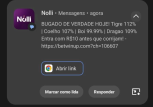

Cuidado com o golpe da foto no WhatsApp
Golpistas usam a foto de um familiar para pedir dinheiro com urgência.
VEJA EXEMPLOS
1. Golpistas usam a foto de um familiar para pedir dinheiro com urgência.



COMO O GOLPE FUNCIONA
- 1Golpista cria perfil falso com sua foto
- 2Manda mensagem urgente pedindo dinheiro
- 3Pede Pix antes que você desconfie
SINAIS DE ALERTA
-
Número desconhecido, mesmo com foto conhecida
-
Pedido de dinheiro com urgência
-
Pede para não contar pra ninguém
O QUE FAZER AGORA
- Pare a conversa
- Ligue para a pessoa por outro canal
- Só envie dinheiro após confirmar
2. WhatsApp falso e falsa identidade: criminosos criam perfis com a fotografia de uma pessoa real, usando outro número para enganar conhecidos.
COMO O GOLPE FUNCIONA
- Criminoso cria um perfil com a foto de uma pessoa real usando outro número.
- Entra em contato com familiares, amigos e conhecidos da vítima.
- Tenta obter transferências de dinheiro se passando pela pessoa retratada.
SINAIS DE ALERTA
Mensagem de um número diferente, foto de um conhecido no perfil novo e pedido inesperado de transferência.
RECOMENDAÇÕES DA ANATEL
- Restrinja a visibilidade da foto do perfil aos seus contatos.
- Denuncie a conta falsa no próprio aplicativo.
- Avise as pessoas que podem ser abordadas pelo golpista.
3. Tomada de conta: o criminoso tenta assumir a conta da vítima para roubar códigos de autenticação.
COMO O GOLPE FUNCIONA
- O criminoso entra em contato usando uma desculpa falsa.
- Convence a vítima a informar um código recebido por SMS.
- Usa o código para assumir o controle da conta em outro aparelho.
SINAIS DE ALERTA
Alguém pede o código de 6 dígitos, confirma cadastro por SMS ou você é desconectado repentinamente.
RECOMENDAÇÕES DE SEGURANÇA
- Use senhas fortes e diferentes.
- Ative a verificação em duas etapas.
- Nunca forneça códigos de autenticação.
4. Falso funcionário ou instituição: o criminoso se apresenta como representante de banco, empresa ou órgão público.
COMO O GOLPE FUNCIONA
- O criminoso se passa por um representante oficial.
- Informa um problema ou benefício falso.
- Induz a vítima a fornecer dados ou realizar uma transação.
SINAIS DE ALERTA
Mensagem urgente sobre bloqueio de conta, oferta inesperada ou pedido de senha e código.
ALERTA IMPORTANTE
- Instituições não pedem senhas ou códigos por mensagem.
- Não atualize cadastro por links recebidos.
- Procure sempre os canais oficiais.